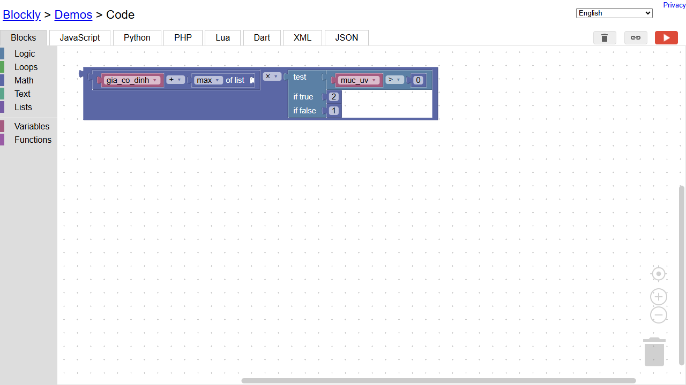
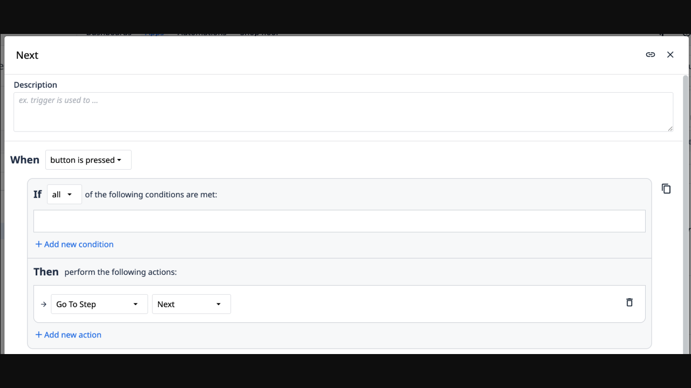
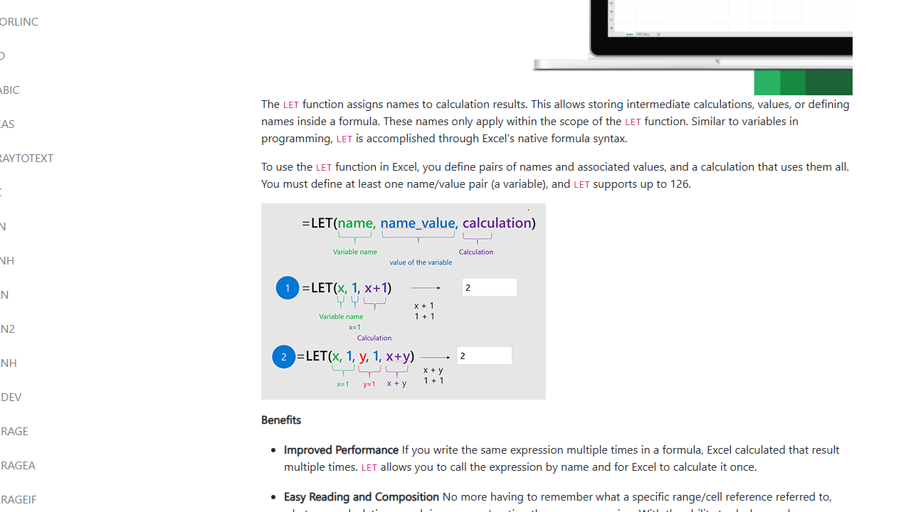
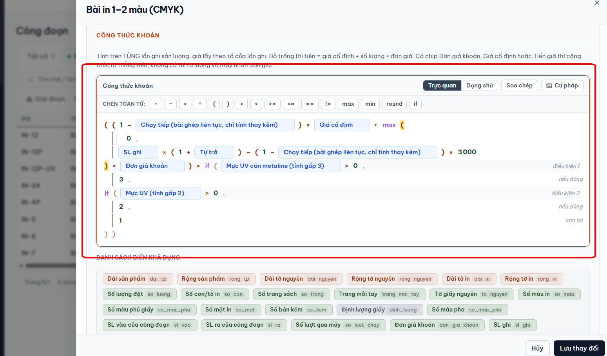
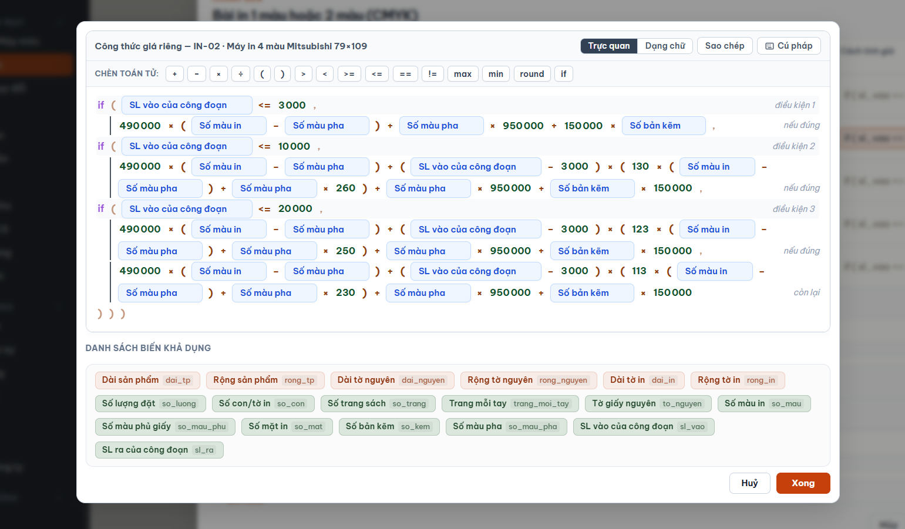

Công thức thật của công đoạn trong ảnh bạn gửi: ((1 - chay_tiep) * gia_co_dinh + max(0, sl_ghi * (1 + tu_tro) - (1 - chay_tiep) * 3000) * don_gia_khoan) * if(metaline > 0, 3, if(muc_uv > 0, 2, 1))
Đã đọc: FormulaField.tsx (chế độ Trực quan, chip, con trỏ là chỉ số trên dãy token phẳng), congThucBacThang.ts (cắt dòng, làm phẳng chuỗi else-if, nhãn mờ "điều kiện 1 / nếu đúng / còn lại"), spec 2026-09-29-o-cong-thuc-bac-thang-hai-che-do-design.md. Ô này dùng chung ở 5 chỗ (Công thức tính giá, khoán, giờ chạy + giá của máy, vật tư), nên phương án chọn sẽ áp cho cả 5.
Giữ đúng bất biến của spec 29/09: chuỗi lưu KHÔNG đổi (vẫn IF lồng kiểu Excel), không thêm trường hay bảng mới, mọi token vẫn bấm vào được để đặt con trỏ, chế độ Dạng chữ giữ nguyên. Cả ba phương án chỉ đổi cách VẼ ở chế độ Trực quan.
Không đưa "ô thử tính" vào: spec 29/09 mục 9 ghi chủ đã nói không cần. Nếu giờ muốn thì nói, tôi ghép thêm vào phương án được chọn.
Chung cho cả ba: chip tuỳ chọn tên dài chỉ hiện phần trước dấu ngoặc ("Chạy tiếp", "Mực UV cán metaline"), rê chuột thấy tên đủ.

Google Blockly (demo chính thức, mở 22/10)Tôi nạp thử một biểu thức có max và if. Không có dấu ngoặc nào: mỗi cụm là một khối nền khác màu lồng trong khối cha; if là khối có nhãn "test / if true / if false". → A

Tulip (phần mềm MES, trang Triggers, mở 22/10)Cùng nghiệp vụ xưởng. Điều kiện viết thành khối "If … / Then …" có viền riêng, đọc từ trên xuống như câu; nút "+ Add new condition" ngay trong khối. → B

Excel: hàm LET (Microsoft Support, mở 22/10)Đặt tên cho từng phần tính (x, y) rồi công thức cuối chỉ ghép các tên đó. Hình minh hoạ tô màu từng phần và chú thích tên ngay dưới. → C

Hiện tại (ảnh bạn gửi)Chuỗi token vẽ phẳng, phải dò cặp ngoặc; hai if lồng vẽ thành "điều kiện / nếu đúng / còn lại" nằm tít mép phải; chip "Chạy tiếp (…)" dài lặp hai lần.
A. Ngoặc thành khối lồng, if thành khối "nếu … thì …"
Bám Blockly.
Không vẽ dấu ngoặc nữa: mỗi cặp ngoặc là một khối nền nhạt, lồng sâu thì nền đậm dần. Hai mép khối chính là chỗ bấm đặt con trỏ trước/sau ngoặc (token ngoặc vẫn còn, chỉ không in ra).
max(0, …) vẽ thành khối có nhãn nhỏ "lớn hơn của"; chuỗi if thành khối tím mỗi bậc một hàng "nếu … thì …", cuối là "còn lại", nhãn nằm sát vế chứ không tít mép phải.
Vẫn một khối liền như công thức, nên công thức ngắn không bị kéo dài.
Chuỗi else-if làm phẳng như luật 29/09: "nếu … thì …" các bậc cùng cấp trong một khối, "còn lại" ở cuối. Đánh đổi: if ở vế "thì" hay if giữa phép tính vẫn thành khối lồng khối, công thức lồng sâu sẽ thụt dần sang phải.
Hình 2: công thức giá riêng máy IN-02, 3 ngưỡng SL vào
Mỗi bậc là một hàng "nếu SL vào ≤ … thì …" trong cùng một khối tím. Giá trị dài tự xuống dòng nhưng thụt treo dưới chính nó. Mỗi cặp ngoặc thành khối nhạt nên "(Số màu in − Số màu pha)" đọc thành một cụm. Thêm cho công thức bậc: phần nào giống hệt bậc trên thì in mờ, chỉ số khác bậc trên được tô vàng, mắt chỉ phải nhìn 130 → 123 → 113 và 260 → 250 → 230.
Hiện tại

Sau khi chỉnh
Công thức giá riêng — IN-02 · Máy in 4 màu Mitsubishi 79×109
Trực quanDạng chữ
B. Phép tính giữ một dòng, chuỗi if thành bảng điều kiện bên dưới
Bám khối If/Then của Tulip.
Phần phép tính vẽ như hiện nay nhưng ngoặc in nhạt, ngoặc cùng cặp sáng lên khi con trỏ đứng cạnh (đã có).
Chỗ có if trong dòng chỉ hiện một thẻ "theo điều kiện ↓"; cả chuỗi if vẽ thành bảng ngay bên dưới: cột "Khi", cột "Lấy", hàng cuối "Còn lại". Đọc là hiểu ngay ×3 / ×2 / ×1.
Mỗi ô trong bảng vẫn là các token thật (bấm đặt con trỏ, Backspace xoá như cũ). Nút "+ Thêm điều kiện" = thao tác "Nhân đôi bậc" đã có trong spec 29/09.
Theo điều kiện, xét từ trên xuống, gặp dòng đúng đầu tiên thì lấy
Khi
Mực UV cán metaline>0
lấy3
Khi
Mực UV>0
lấy2
Còn lại
lấy1
＋ Thêm điều kiện
Đánh đổi: chỉ cứu phần if. Phần phép tính có max và ngoặc lồng vẫn phải dò ngoặc như cũ (nhẹ hơn vì ngoặc in nhạt). if nằm ở vế "nếu đúng" hoặc if không đủ ba vế thì không thành bảng, vẽ như hiện nay.
Hình 2: công thức giá riêng máy IN-02, 3 ngưỡng SL vào
Bảng điều kiện gánh trọn: cột Khi là ngưỡng SL vào thẳng một cột, cột Lấy chứa giá trị dài (ngoặc in nhạt). Cùng luật mờ phần trùng bậc trên, tô vàng chỗ khác.
Hiện tại
Sau khi chỉnh
Công thức giá riêng — IN-02 · Máy in 4 màu Mitsubishi 79×109
Trực quanDạng chữ
C. Tách công thức thành các phần có tên, dòng đầu là khung ghép
Bám hàm LET của Excel.
Máy tự cắt công thức ở các phép + và × ngoài cùng: dòng đầu là khung "Tiền = (A + B) × C", mỗi phần A, B, C một dòng riêng bên dưới. Tên A/B/C chỉ để vẽ, không lưu.
Mỗi dòng ngắn, ít ngoặc. Phần là chuỗi if thì vẽ thành các dòng "nếu … lấy …" thẳng cột.
Rê chuột vào A ở dòng khung thì dòng A sáng lên và ngược lại. Sửa trong từng dòng như sửa công thức bây giờ; Dạng chữ vẫn ra đúng một chuỗi như cũ.
Đánh đổi: công thức ngắn (một hai chip) không cắt phần, vẽ một dòng như nay. Công thức chỉ có một phần lớn (vd cả công thức là một chuỗi if của giá máy in) thì C giống bản hiện tại. Thêm phép + hay × mới ở khung thì phải chọn đúng dòng để gõ, đổi cách thao tác nhiều nhất trong ba phương án.
Hình 2: công thức giá riêng máy IN-02, 3 ngưỡng SL vào
Cả công thức là MỘT chuỗi if, cắt ở +/× ngoài cùng không ra gì. Muốn C có ích ở đây thì máy phải tự gom PHẦN CHUNG của các bậc thành một dòng P (chỉ để xem), rồi mỗi bậc chỉ còn phần riêng. Sửa P là sửa cả 4 bậc cùng lúc. Lưu ý: bậc 1 viết "150 000 × Số bản kẽm", ba bậc sau viết "Số bản kẽm × 150 000", máy phải hiểu hai cách viết là một mới gom được.
Hiện tại
Sau khi chỉnh
Công thức giá riêng — IN-02 · Máy in 4 màu Mitsubishi 79×109